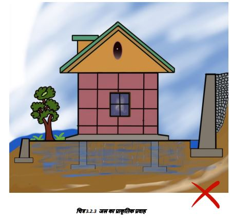

ऐसे स्थानों को प्राथमिकता दें जहां ढलान 30 डिग्री या उससे कम हो।
आमतौर पर, पहाड़ी ढलानें जो नरम मिट्टी से बनी होती हैं और जिनकी ढलान 30 से अधिक होती है, भूस्खलन के प्रति संवेदनशील होती हैं। 30 से कम ढलान वाली नरम जल संतृप्त मिट्टी में भी समस्या बढ़ जाती है। .
पर है तो वह छोटा होना चाहियदि घर तीव्र ढलान ए।
सबसे पहले निचले स्तर पर मकान बनाये जाने चाहिए। विभिन्न ऊंचाई पर संरचनाओं के बीच क्षैतिज दूरी उनके ऊर्ध्वाधर स्तरों के अंतर से कम से कम 3 गुना होनी चाहिए। (चित्र 3.2.3)
3.2.1 ढलान
जांच करें कि ढलानों को विभिन्न भागों में काटा जा सकता है ताकि जब ढलान भाग की ऊंचाई 1 मीटर हो, तो चौड़ाई कम से कम 1.5 मीटर हो।
सुनिश्चित करें कि स्थान का प्राकृतिक ढलान पानी को स्थान से दूर ले जाए।
यह महत्वपूर्ण है कि ढलान को यथासंभव न्यूनतम रूप से काटा और भरा जाए। ढलान को काटते और भरते समय स्थान के प्राकृतिक ढलान को ध्यान में रखा जाना चाहिए।
तीव्र ढलानों से भूस्खलन, कटाव और ढलान अस्थिरता का खतरा बढ़ जाता है। ऐसी अ-स्थिर जमीन पर भवन निर्माण से संरचनात्मक क्षति या विनाश हो सकता है। खड़ी ढलानों पर पानी का बहाव अधिक तेज होता है, जिससे भूमि का कटाव हो सकता है और नीचे की ओर बाढ़ आ सकती है। जल निकासी के लिए उचित कदम आवश्यक हैं, हालांकि इन्हें प्रभावी ढंग से लागू करना अक्सर मुश्किल हो सकता है।
हल्की ढलानों के निम्नलिखित लाभ हैं
आसान निर्माण
बेहतर पहुंच
अधिक उपयोग
योग्य स्थान
कटाव का खतरा कम
बेहतर जल निकासी सुरक्षा
दिए गए सभी पॉंच कारण आपके घर की कुल लागत को कम करते हैं।
उन पहाड़ी ढलानों पर घर बनाना अधिक सुरक्षित होता है, जहाँ चट्टानों की भूवैज्ञानिक ढलान पहाड़ी के अंदर की ओर जाती हो, और पहाड़ी ढलान के समानांतर न हो।
स्थल ऐसा होना चाहिए कि पुष्ते की दीवार और भवन की दीवार के बीच न्यूनतम 1.5 मीटर की दूरी प्राप्त हो सके। ढलान के कटे हुए हिस्से पर एक उपयुक्त मिट्टी का बाध्ं बनाया जा सकता है। घाटी की ओर, नींव का आधार ठोस प्राकृतिक मिट्टी या चट्टान पर होना चाहिए, न कि भरी हुई जमीन पर।
3.2.2 जलनिकास
विशेषकर गर्मी के महीनों में जमीन में दरारों पर ध्यान देना महत्वपूर्ण है। जिन स्थानों पर नियमित वर्षा होती है, वहां नरम मिट्टी की ढलानें धीरे-धीरे खिसक सकती हैं।
योजना बनाने से पहले पिछले 30-40 वर्षों में जल स्तर में वृद्धि में आये बदलाव को ध्यान में रखा जाना चाहिए। प्लिंथ की ऊॅंचाई प्राकृतिक जमीनी स्तर से ऊपर, साइट पर उच्च बाढ़ स्तर और भविष्य में संभावित सड़क स्तर से ऊपर होनी चाहिए।
ढलान वाली जगह पर किसी इमारत के ऊपर की ओर जल निकासी पर विशेष ध्यान देने की आवश्यकता होती है। जल के प्राकृतिक प्रवाह को नींव से दूर मोड़ना चाहिए।
निर्माण स्थान नदी और नालों से काफी ऊंचे स्तर पर होना चाहिए ताकि वह भूस्खलन, बांध/जलाशयों से निकलने वाले पानी और बाढ़ से अप्रभावित रहे।
3.2.3 जल चैनलों से निकटता
साइट ऐसी होनी चाहिए कि भवन स्थान ढलान के किनारे से पर्याप्त दूरी पर हो। किसी व्यक्तिगत इमारत की नींव प्राकृतिक बाढ़ के मैदान के जमाव के रूप में बनी हुई छतों के किनारे से दूर स्थित होनी चाहिए या पहाड़ी की तरफ या नदी के किनारे पर काटकर और भरकर बनाई गई होनी चाहिए।
● नदियों और नालों के संभावित घुमावदार मोड़ के कारण भूस्खलन और कटाव के प्रति संवेदनशील (खतरे वाली) पहाड़ियों से बचना
चाहिए।
● हम दिए गए उदाहरण (चित्र.3.2.3.2) में देख सकते हैं कि एक घुमावदार नदी पहाड़ी हिस्से का तेजी से कटाव कर सकती है। साइट चयन में यह एक महत्वपूर्ण बिदु है।
जांच करे कि आपकी साइट किसी मौसमी जल स्रोत को अवरुद्ध तो नहीं करती है। (चित्र 3.2.3.2)